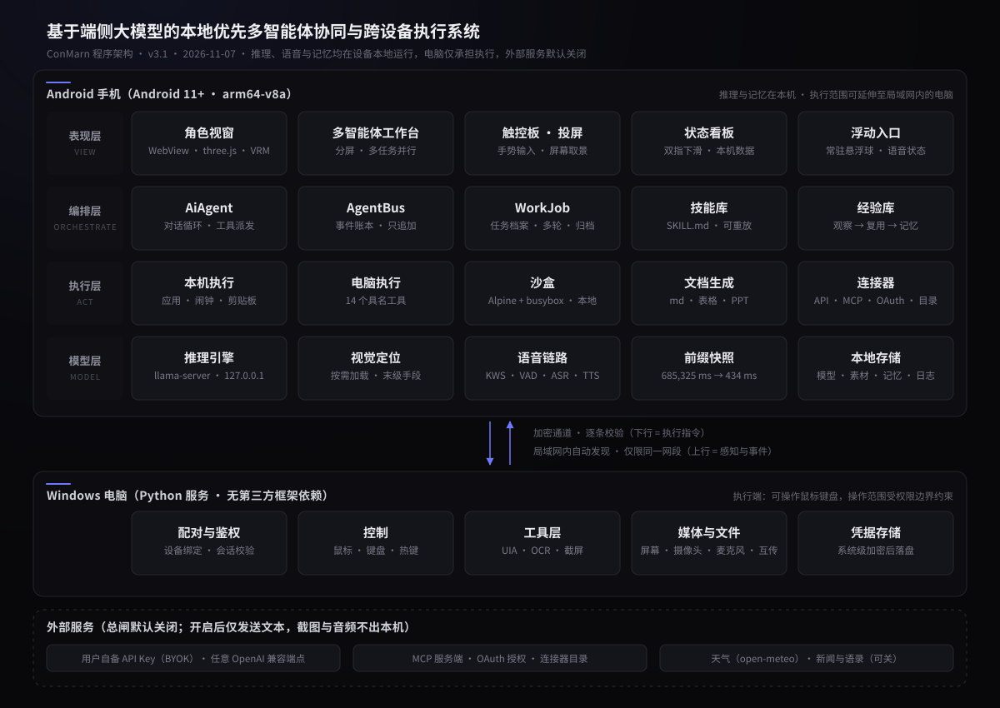

恒定前缀首次计算约 11 分钟；结果写盘后，再次还原仅需 434 毫秒。
多智能体工作台同时推进的任务上限，每件可追加轮次、停止与归档。
全部通过，失败数为 0。数值取自构建产物。
角色与房间
三维角色与可交互房间。窗外光照随真实天气与时段变化，可就地点击物件发起操作。
多智能体工作台
三件任务并行推进，每件可继续追问、停止与归档；事件按任务分别记录，过程可回溯。
无人机调度
经 API 连接器接入外部设备：航线、遥测与任务在同一界面内调度，可暂停、可返航。
机械臂协作
按步骤执行取放流程，关节角与末端坐标实时回读，每一步可单独停止。
手机是大脑，电脑是手
电脑端程序把电脑上的能力收进同一个窗口：摄像头与麦克风开关、与手机互传文件、配对状态、运行日志与开机自启。程序本身不参与配对与加密，这些仍由后台运行的电脑端服务负责；关闭窗口不影响手机连接。电脑端为可选组件，与手机端配套使用。
概览
服务运行时长、手机连接、配对状态、连接信息、当前配对码与最近事件，集中在同一页。
文件
本地中转目录与手机中转目录并列。上传、发送与取回在原位完成；重名自动顺延，不覆盖已有文件。
配对
输入登录 PIN 后才显示配对二维码。二维码与配对码均为一次性，解除配对后手机需要重新配对。
界面截图使用示例数据。
与云端助手的差异
差异不在单项能力的强弱，而在四个维度同时成立：数据位置、执行范围、并发能力与成本归属。
一次请求的完整路径
自采集至回执共六个环节，每个环节失败都有确定的降级路径。
采集
本地唤醒词与断句，全程不联网。播报期间麦克风自动关闭。
理解
端侧模型解析意图，判定应当回答、追问还是执行。
编排
任务拆分为若干步骤，分配给工作台内的多个角色，最多三件并行。
执行
在本机操作、在沙盒中运行命令，或经局域网交由电脑端执行。
回执
输入类操作回读校验，画面类操作以像素变化为判据；不一致即报错。
回应
以语音与表情陈述结果，并说明下一步可执行的动作。
四层分工
手机承担全部推理，电脑只承担执行。这不是部署图，是权限图。

八项能力
角色、执行与编排共用同一套端侧推理底座。每一项都可以单独关闭。
角色与场景
三维角色与可交互房间场景。窗外光照随真实天气与昼夜变化，按时段问候并报告当日事项。
语音
本地唤醒词、断句、识别与合成，全程不联网。播报期间自动关闭采集，不会自触发。
电脑端工具
14 个具名工具，按「控件树 → 文字识别 → 视觉定位」三级降级，耗时自毫秒级递增至秒级。
本机与沙盒
操作本机应用与日程。内置沙盒提供一套无需 root 的用户态 Linux 环境。
多智能体工作台
三件任务并行，每件可追加轮次、停止与归档。事件按任务分别记录，过程可回溯。
技能与经验
已完成的流程可沉淀为可重放的技能；观察所得经验在后续任务中被召回。全部存于本机。
连接与传输
同一局域网内点对点连接，动态配对码与动态口令校验；文件双向传输并校验完整性。
云端与连接器
用户自备密钥，兼容主流协议；支持 MCP、OAuth 与自建接口，全部受总开关控制。
四项设计取舍
四项取舍的共同点：都在缩短「看起来能做」与「确实做到」之间的距离。
前缀快照
系统提示词与工具表构成一段恒定前缀，约 4,889 个标记。首次计算在手机上耗时 685,325 毫秒；结果写盘后再次还原仅需 434 毫秒。代价是与模型及提示词逐字绑定，任一改动即触发重算。
工具表不膨胀
能被模型看见的工具表即那段前缀。因此仅常驻的电脑端工具提供具名入口，其余能力共用一个通用入口，清单置于工具回执之中——回执位于缓存之后，不破坏快照。接入一个工具与接入二十个工具，前缀长度相同。
诚实回执
输入类操作完成后回读校验，不一致即报错；画面类操作以像素是否变化为判据。不以「调用成功」代替「执行成功」，每条回执都说明下一步可以做什么。
单一总闸
「云端备用通道」是唯一的对外开关。关闭后，天气、网页读取、云端执行与连接器一律停止外发。不设逐项关闭，因此不存在遗漏一项的可能。开关位于设置内，默认关闭。
能承诺的，与不能承诺的
两栏并列：左侧列出已经成立的事实，右侧列出不予承诺的部分。
规格与规模
以下数值取自源码工作树、构建产物与真机安装包，未作估算。
不做的事项
一个产品的可信度，一半来自它声明能做多少，另一半来自它承认不做多少。
常见问题
安装前值得先看的六条。
需要联网才能使用吗？
哪些设备可以安装？
是否需要付费？
电脑端不安装会怎样？
数据是否会被上传？
为什么没有 iOS 版本？
开源与商业化
源代码以 Apache-2.0 全部公开，个人使用不收费。商业收入来自机构侧的授权、部署与维护，不来自对个人用户的功能限制。
推理在本机完成，个人版不产生任何服务端支出，用户增长不扩大成本。机构采购本地运行的软件前需要审计代码、确认关闭总闸时数据不出内网；开源是进入该市场的前提，而非让步。